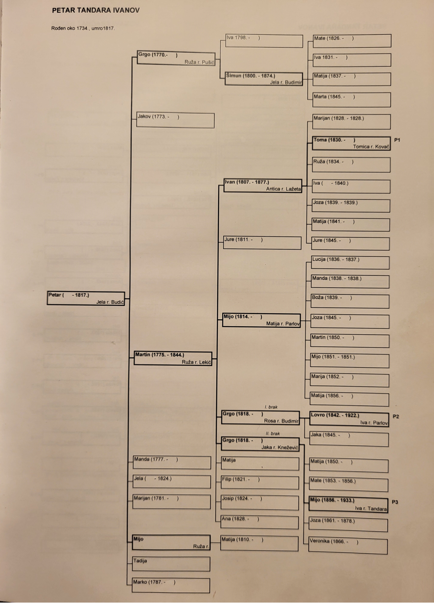

Petar Tandara bio je nesumnjivo Ivanov sin, najvjerojatnije drugi ili treći po redu jer se još može dovesti u korelaciju sa livanjskim Filipom kao jednim od Ivanove djece. Umro je 1817. godine u osamdeset i trećoj godini života, pa se procjenjuje da je rođen oko 1734. godine.
Petar je bio oženjen Jelom Budić. Imali su sinove Grgu, Jakova, Martina, Marijana, Miju, Tadiju i Marka, te kćeri Mandu i Jelu. Sinovi Jakov, Marijan i Marko nisu bili na popisu duša 1806. a Tadija je izostavljen sa istog popisa 1819. pa se može pretpostaviti da više nisu bili među živima ili je netko od njih odselio iz Ričica. Sinovi Grgo, Martin i Mijo su jedini nasljednici loze.
Najstariji Petrov sin oženio se Ružom Pušić. Imali su sina Šimuna i kćer Ivu. Šimun nije imao muškog nasljednika tako da se Grgina grana ugasila.
Treći Petrov sin oženio se Ružom Lekić. Imali su sinove Ivana, Juru, Miju, Grgu, Filipa i Josipa te kćeri Matiju i Anu.
Za Juru, Filipa i Josipa nisu pronađeni drugi zapisi osim onih o njihovu krštenju, pa nije poznato jesu li umrli mladi ili su se odselili. Sinovi Ivan , Mijo i Grgo su jedini nastavili lozu.
Peti Petrov sin, bio je oženjen Ružom nepoznatog djevojačkog prezimena. Imali su kćer Matiju. Iza toga se Mijina grana ugasila.
Najstariji Martinov sin godine 1826. oženio se Anticom Lažeta. Ivan i Antica imali su sinove Marijana(koji je umro kao dijete), Tomu i Juru, te kćeri Ružu, Ivu, Jozu i Matiju. Marijan je umro kao malo dijete. O Juri nisu pronađeni drugi podaci osim zapisa o njegovu rođenju. Toma je bio jedini nasljednik Ivanove loze.
Treći Martinov sin, i njegova žena Matija rođ. Parlov, imali su sinove Martina i Miju (koji je umro kao malo dijete), te kćeri Lucu, Mandu, Božu, Jozu, Mariju i Matiju. O Martinu nisam našao drugih zapisa osim onoga o njegovu rođenju. Nakon djece se Mijina loza gasi.
Četvrti Martinov sin, ženio se dvaput. Iz prvog braka s Rosom rođ. Budimir imao je sina Lovru i kćer Jaku. U drugom braku s Jakom rođ. Knežević Grgo je imao sinove Matu (koji je umro kao malo dijete) i Miju, te kćeri Matiju, Jozu i Veroniku.
Toma je drugi Ivanov sin, a bio je oženjen Tomicom Kovač. Imali su sinove, Ivana, Matu, Juru i ponovo Ivana koji je umro kao dijete. Od svih jedino Jure je imao potomstvo. Tomini potomci bili su u Zavelimu prepoznatljivi pod nadimkom Tromići. Prema predaji bili su izrazito visoki i spori, odnosno tromo su se kretali. Po tim svojim tromim pokretima dobili su nadimak Tromići. U nastavku će se obrađuivati samo Jurina loza koji je jedini Tomin nasljednik.
Godine 1819. obitelj Martina Tandare, Lovrina djeda, bila je u Zavelimu. Na tom popisu su i Martinovi sinovi Ivan, Mijo i Grgo. Kad se 1835. radio austrijski katastar, Martin Tandara pok. Petra, upisan je kao posjednik nekretnina u Ričicama. Većina ričićkih plemena imala je u to vrijeme nekretnine u Ričicama, Zavelimu, Podbiloj i Viru. Navedena sela imala su zajedničku župu u Ričicama. Mnoge obitelji unutar jednog roda su selile s jednog lokaliteta na drugi, čak i u samim Ričicama. Broj stanovnika je naglo rastao i tražili su se novi prostori za život. U tom kontekstu možemo razumjeti i prihvatiti činjenicu da je neka obitelj, ili njezin dio, kod jednog popisa bila u Ričicama, a kod sljedećeg u Zavelimu ili obrnuto.
Najstariji Grgin sin, oženio se Ivom Parlov i s njom imao sinove Antu, Ivana i Marijana, te kćeri Ivu i Lucu. O Ivanu nema drugih podataka osim zapisa o njegovu rođenju. U Matičnoj knjizi umrlih župe Ričice zapisano je da su Lovrinu kćer Lucu u trinaestoj godini života „ubile stine“.
Treći Grgin sin, oženio se Ivom Tandara. Imali su sinove Martina (koji je umro u dobi od 19 godina), Nikolu i Matu (koji je umro kao malo dijete) i ponovo Nikolu, te kćeri Ivu i Maru. O Nikoli mlađem nisam našao drugih podataka osim zapisa o njegovu rođenju dok je stariji Nikola preminuo kao dijete. Mijina djeca nisu imala nasljednike loze.
Treći Tomin sin i jedini nasljednik uzeo je za ženu Ivu Lažeta. Imali su sinove Tomu i Ivana (koji su umrli kao mala djeca), zatim Pia, Dominika i Matu, te kćer Matiju.
treći Jurin sin uzeo je za suprugu Tereziju Budimir sa kojom su dobili sinove Ivana, Juru i Jozu, te kćer Maru. Najstariji sin Ivan(1936-2025) sa suprugom Marijanom Petter ima sina Dina i kćer Romanu. Dino sa suprugom Matildom Klepikapić ima kćeri Hedvigu, Leonardu i Luciju. Obitelj danas živi u Zagrebu.
četvrti Jurin sin sa suprugom Marom Knezović je dobio sinove Antu, Barišu, Nikolu, Pia, Svetu i Ivana, te kćer Olgu. Samo sin Ivan ima sinove Dominika i Davida koji nastavljaju Dominu granu.
Peti Jurin sin oženio je Maru Budić sa kojom je dobio sinove Tomislava, Miju i........, te kćer Matiju. Dva najmlađa sina su umrli u petoj godini života. Tomislav je oženio Božicu Golubiček sa kojom ima sinove Martina i i Matu. Mate se oženio sa suprugom Ivanom Trošelj sa kojom je dobio kćer Tenu. Mate Jurina potomci danas žive u Zagrebu.
Kao što je već ranije napisano, Lovro je imao sinove Antu i Marijana kao jedine prenositelje loze. Njihovi sinovi su imali tridest i troje djece.
Ante Lovrin bio je oženjen Tomicom Lukić i s njom imao sinove Ivana, Marijana, Matu i Nikolu, te kćeri Martu, Ivu i Matiju.
Oženio se Lucom Parlov i s njom imao sinove Miju, Marina, Petra i Ivana (koji je umro kao malo dijete), te kćeri Matiju, Ivu, Anu i Tomicu.
Najstariji Antin sin oženio se Marom Mršić. Imali su sinove Lovru, Mirka, Matu, Antu Vladu i Nikolu, te kćer Tomicu. Ivan je odselio u Slatinu, a Ivanovi potomci danas žive u Predavcu kod Bjelovara, Slatini, Obrovcu, Zagrebu i Njemačkoj.
Drugi Antin sin bio je u braku s Milicom rođ. Mikulić i imao je sinove Franu (koji je poginuo u Beču 1945. u osamnaestoj godini života) i Antu (koji je umro kao malo dijete), te kćeri Mariju i Stanu. Marijan je umro od upale pluća u trideset i petoj godini života. Marijan nije imao nasljednike loze poslije svoje djece.
Četvrti Antin sin Mate, bio je oženjen Marom Knežević. Imali su sinove Antu Brunu i Franu, te kćeri Anu, Dinku i Olgu.
Peti Antin sin bio je oženjen Tomicom Budimir i imali su sinove Antu (koji je umro kao malo dijete), Dragu, Jerka i Ivana (koji je također umro kao malo dijete), te kćeri Matiju, Branku i Mariju. Dragini sinovi žive u Ričicama.
Lovre je bio najstariji Ivanov sin. Sa suprugom Rozikom Peška ima dvije kćeri, Šteficu i Anu. Muških nasljednika loze nema.
Drugi Ivanov sin bio je oženjen sa Danicom Lukić sa kojom je dobio sinove Ivana i Veselka, te kćerMirjanu.
Doktor Bruno rođen je 7. listopada 1937. u Ričicama. Godine 1968. oženio se Vanjom Brkljača i s njom dobio sina Zvonimira, te kćeri Zrinku i Tomislavu.
Dr. Ante Bruno Tandara (1937.–1989.) bio je hrvatski liječnik, saborski zastupnik i društveni djelatnik koji je aktivno sudjelovao u pokretu Hrvatskog proljeća krajem 1960-ih i početkom 1970-ih godina. Kao član hrvatskog reformnog pokreta zalagao se za veća prava Hrvatske unutar tadašnje jugoslavenske federacije te je sudjelovao u radu Matice hrvatske i drugim javnim aktivnostima usmjerenima na promicanje hrvatskog nacionalnog i kulturnog identiteta.
Nakon sloma Hrvatskog proljeća 1971. godine bio je uhićen, osuđen i zatvoren zbog svojega političkog djelovanja. U hrvatskoj javnosti ostao je zapamćen kao jedan od istaknutih sudionika Hrvatskog proljeća i simbol političkih progona toga razdoblja.
Mladi Matin sin, oženio se Matijom Topalušić. Imaju sinove Matu i Antu, te kćer Elzu. Žive u Ričicama.
Najstariji Marijanov sin, u braku sa Slavkom rođ. Sablić imao je sinove Vinka, Ivana, Milana, Marijana i ponovno Ivana (umro u dobi od dvije godine), te kćeri Milu-Ivu, Anicu, Nadu i Macu. Vinkovi, Milanovi i Marijanovi potomci danas žive u Ričicama, Splitu, Zagrebu, Austriji i Njemačkoj.
Drugi Marijanov sin, godine 1938. ženi se Matijom Žuljić. Imali su sinove Marijana (koji je umro u dobi od dvije godine), Alojza, Luku (koji je umro kao jednogodišnje dijete), Vicu (mog rođaka iz Uvoda i pokretača ovog projekta) i Blaža, te kćeri Dragicu, Nevenku i Anku. Marinovi potomci danas žive u Ričicama, Splitu, Zagrebu i Njemačkoj.
Treći Marijanov sin, u braku sa Zorkom r. Pavić imao je sina Antu (koji je umro u drugoj godini života), te kćeri Milu, Mariju, Ankicu, Miru, Zorku i Rosu.
Martinov sin Grgo godine 1841. oženio se Rosom Budimir. Iz zapisa o njihovom vjenčanju doznajemo da je Grgo stanovnik Ričica kao i to da je Rosa bila udovica. Iz katastarskih dokumenata, koji se čuvaju u Državnom arhivu u Splitu, može se također zaključiti da je Grgo u to vrijeme bio stanovnik Ričica. On je u Zapisniku čestica zgrada sela... Ričice iz 1835., naknadno upisan kao posjednik čestice broj 203 na kojoj je bila ubilježena kuća za stanovanje. Na temelju navedenih dokumenata moglo bi se zaključiti da je Grgo samo povremeno i privremeno boravio u Zavelimu, odnosno da je, zapravo, bio stanovnik Ričica. No, današnje Lovriće vjerojatno zanima kada i kako su Grgo, ili njegovi potomci, doselili na današnju lokaciju u centru Ričica? Pokušajmo odgovoriti i na ta pitanja.
Rosa Budimir, prva Grgina žena, bila je jedino dijete bračnih drugova Lovre Budimira i Veronike rođ. Lekić. Ona se 1841. udala za Grgu Tandaru i rodila mu sina Lovru i kćer Jaku. No, Rosa 1848. umire od crnog prišta. Lovro Budimir, sin je Marijana Budimira i Stane rođ. Ivanko. Kada se 1835. radio katastar Ričica, Lovro je upisan kao posjednik nekretnina na kućnom broju 44 (Tablica 9-1 na stranicama 97 i 98). Lovro je 1840. umro od upale pluća u pedeset i petoj godini života. U već spomenutom Zapisniku čestica zgrada iz 1835. (Slika 5-6) Veronika Budimir udova pok. Lovre upisana je kao posjednik čestice 251, na kojoj je uknjižena pojata, te čestice 254 na kojoj je ubilježena kuća za stanovanje. Nije poznato kada je Veronika umrla, jer zapisa o njenoj smrti nisam pronašao.

Petar Tandara was undoubtedly Ivan’s son, most likely the second or third in order of birth. He died in 1817 at the age of eighty-three, which places his birth around 1734.
Petar was married to Jela Budić. They had sons Grgo, Jakov, Martin, Marijan, Mijo, Tadija, and Marko, and daughters Manda and Jela.
Petar’s eldest son married Ruža Pušić. They had a son Šimun and a daughter Iva.
Šimun, in his marriage to Jela Budimir, had a son Mate and daughters Iva, Matija, and Marta. No further records have been found for Mate beyond his baptism entry.
Jakov is mentioned among Petar’s sons, but he does not appear in the household register of Petar’s family from 1806, suggesting that by then he was no longer living in the parental household.
Petar’s third son married Ruža Lekić. They had sons Ivan, Jure, Mijo, Grgo, Filip, and Josip, and daughters Matija and Ana.
For Jure, Filip, and Josip, no records have been found beyond their baptism entries, so it is unknown whether they died young or moved away.
The eldest son of Martin married Antica Lažeta in 1826. Ivan and Antica had sons Marijan, Toma, and Jure, and daughters Ruža, Iva, Joza, and Matija.
Marijan died in early childhood. No further records exist for Jure beyond his birth entry.
The second son of Ivan was married to Tomicom Kovač. They had sons Ivan, Mate, Jure, and another Ivan who died in early childhood, as well as daughters Iva and Ivanica.
Mate was married to Mara Pušić. They had no children.
Marijan is mentioned among Petar’s sons, but he is not listed in the 1806 household register, suggesting he was already living outside the parental home at that time.
Mijo is listed among Petar’s sons, but no further information about his family is available in this part of the source.
Tadija is not listed in the 1819 “Status Animarum” of the parish of Ričice, suggesting that he had either died or moved away by that time.
Marko is mentioned among Petar’s sons, but he does not appear in the 1806 household register, suggesting he was already living outside the parental home.
Manda is listed among Petar’s daughters. No further information about her family is available in this section of the source.
Jela is listed among Petar’s daughters. No further information about her family is available in this section of the source.
Tomislav’s descendants in Zavelim were locally known by the nickname “Tromići.” According to tradition, they were very tall and slow-moving, hence the name derived from their sluggish manner of walking.
The third son of Tomislav married Iva Lažeta. They had sons Toma and Ivan (both of whom died in early childhood), then Pio, Dominik, and Mate, and a daughter Matija.
The descendants of Pio, Dominik, and Mate today live in Zagreb, Split, Križevci, Dortmund, and Vienna.
Antonija Lažeta, wife of Ivan Tandara Martinov, was the daughter of Jure Lažeta and Kata née Vuković. Jure was the brother of Kristofor Lažeta, and the author of this book is a direct descendant of Kristofor. In this way, all the Tromići are my relatives. This kinship is further confirmed through Iva Lažeta, who was the wife of Ivan’s grandson Jure. Another newly discovered blood connection with the Tandaras.
The third son of Martin, together with his wife Matija née Parlov, had sons Martin and Mijo (who died in early childhood), and daughters Luca, Manda, Boža, Joza, Marija, and Matija. No further records of Martin have been found beyond his birth entry.
Martin’s fourth son married twice. From his first marriage to Rosa née Budimir, he had a son Lovro and a daughter Jaka, who is my great-grandmother from Uvod. In his second marriage to Jaka née Knežević, Grgo had sons Mate (who died in early childhood) and Mijo, and daughters Matija, Joza, and Veronika.
The eldest son of Grgo married Iva Parlov and had sons Ante, Ivan, and Marijan, and daughters Iva and Luca. No further information exists for Ivan beyond his birth record. Parish death records from Ričice state that Lovro’s daughter Luca was “killed by falling stones” at the age of thirteen.
Ante Lovrin married Tomicom Lukić and had sons Ivan, Marijan, Mate, and Nikola, and daughters Marta, Iva, and Matija.
Ivan Antin married Ruža Mršić. They had sons Lovro, Mirko, Mate, Ante Vlado, and Nikola, and a daughter Tomica. His descendants today live in Predavac near Bjelovar, Slatina, Obrovac, Zagreb, and Germany.
Marijan Antin, in his marriage with Milica née Mikulić, had sons Fran (killed in Vienna in 1945 at the age of eighteen) and Ante (who died in early childhood), and daughters Marija and Stana. Marijan died of pneumonia at the age of thirty-five.
My uncle Mate from Uvod was married to Mara Knežević. They had sons Ante Bruno and Fran, and daughters Ana, Dinka, and Olga.
Dr. Bruno was born on 7 October 1937 in Ričice. In 1968 he married Vanja Brkljača and had a son Zvonimir and daughters Zrinka and Tomislava.
Dr. Ante Bruno Tandara (1937–1989) was a Croatian physician, member of parliament, and public figure who actively participated in the Croatian Spring movement in the late 1960s and early 1970s. As a member of the reform movement, he advocated for greater rights for Croatia within the Yugoslav federation and took part in the work of Matica hrvatska and other public activities promoting Croatian national and cultural identity.
After the collapse of the Croatian Spring in 1971, he was arrested, convicted, and imprisoned for his political activities. In Croatian public memory, he remains one of the notable participants of the Croatian Spring and a symbol of political persecution from that period.
The younger Matin son married Matija Topalušić. They have sons Mate and Ante, and a daughter Elza. They live in Ričice.
He was married to Tomica Budimir – uncle of Nina and aunt Toka from Uvod. They had sons Ante (who died in early childhood), Drago, Jerko, and Ivan (who also died in early childhood), and daughters Matija, Branka, and Marija. Nina’s sons live in Ričice.
He married Luca Parlov and had sons Mijo, Marin, Petar, and Ivan (who died in early childhood), and daughters Matija, Iva, Ana, and Tomica.
The eldest son of Marijan, in marriage with Slavka née Sablić, had sons Vinko, Ivan, Milan, Marijan, and another Ivan (who died at age two), and daughters Mila-Iva, Anica, Nada, and Maca. His descendants today live in Ričice, Split, Zagreb, Austria, and Germany.
The second son of Marijan married Matija Žuljić in 1938. They had sons Marijan (who died at age two), Alojz, Luka (who died at one year of age), Vice (my relative from Uvod and initiator of this project), and Blaž, and daughters Dragica, Nevenka, and Anka. His descendants today live in Ričice, Split, Zagreb, and Germany.
The third son of Marijan, in marriage with Zorka née Pavić, had a son Ante (who died in his second year of life), and daughters Mila, Marija, Ankica, Mira, Zorka, and Rosa.
The third son of Grgo married Iva Tandara. They had sons Martin (who died at the age of 19), Nikola, and Mate (who died in early childhood), and daughters Iva and Mara. No further information has been found about Nikola beyond his birth record.
The fifth son of Petar was married to Ruža, surname unknown. They had a daughter Matija.
In 1819, the family of Martin Tandara, Lovro’s grandfather, was in Zavelim. The same record lists Martin’s sons Ivan, Mijo, and Grgo. When the Austrian cadastre was drawn up in 1835, Martin Tandara, son of the late Petar, was registered as the owner of property in Ričice at house number 69 (Tables 9–1, pages 97–98). How can this be explained? The answer is simple. Most families of the Ričice clans at that time owned property in Ričice, Zavelim, Podbila, and Vir. These villages shared a common parish based in Ričice. Many families within the same lineage moved between these locations, sometimes even within Ričice itself. The population was growing rapidly and new living space was needed. In this context, it is understandable that a family or part of it could appear in Ričice in one census and in Zavelim in another, or vice versa.
Martin’s son Grgo married Rosa Budimir in 1841. From their marriage record we learn that Grgo was a resident of Ričice, and that Rosa was a widow. From cadastral documents preserved in the State Archives in Split, it can also be concluded that Grgo lived in Ričice at that time. In the register of building parcels from 1835, he is listed as the owner of parcel number 203, where a residential house was recorded.
From these documents it can be concluded that Grgo only occasionally and temporarily stayed in Zavelim, and that he was in fact a resident of Ričice. However, descendants of the Lovrić line may wonder when and how Grgo or his descendants moved to their present location in the center of Ričice. Let us try to answer that as well.
Rosa Budimir, Grgo’s first wife, was the only child of Lovro Budimir and Veronika née Lekić. She married Grgo Tandara in 1841 and gave birth to a son Lovro and a daughter Jaka. Rosa died in 1848 from carbuncle (a severe skin infection).
Lovro Budimir, son of Marijan Budimir and Stana née Ivanko, was recorded in the 1835 Ričice cadastre as the owner of property at house number 44. He died in 1840 of pneumonia at the age of fifty-five.
In the same 1835 register of building parcels (Figure 5–6), Veronika Budimir, widow of the late Lovro, is listed as the owner of parcel 251, where a barn was recorded, and parcel 254, where a residential house stood. Her date of death is unknown, as no record has been found.
